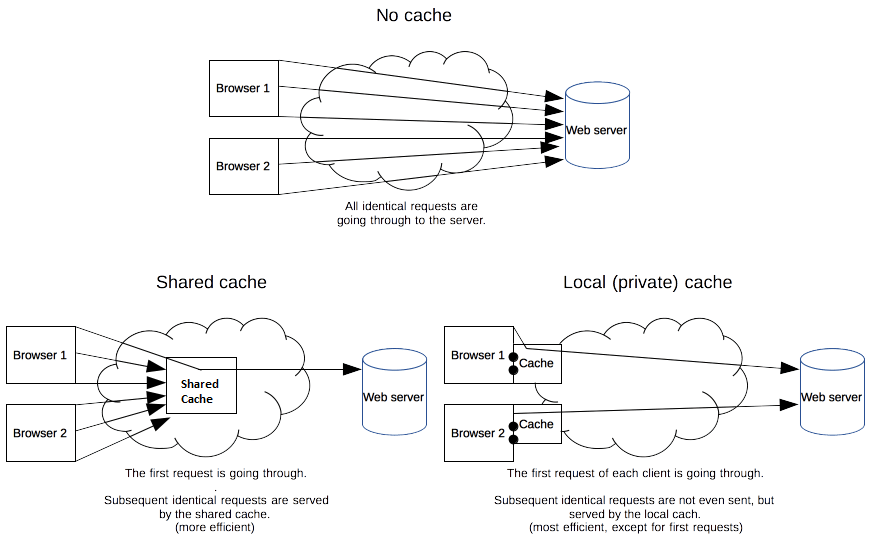
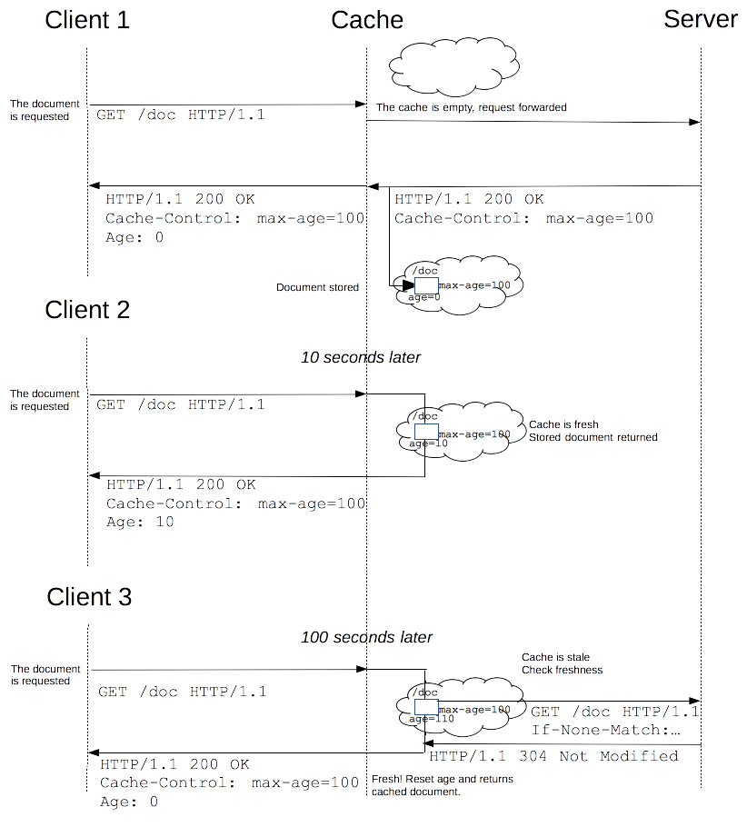
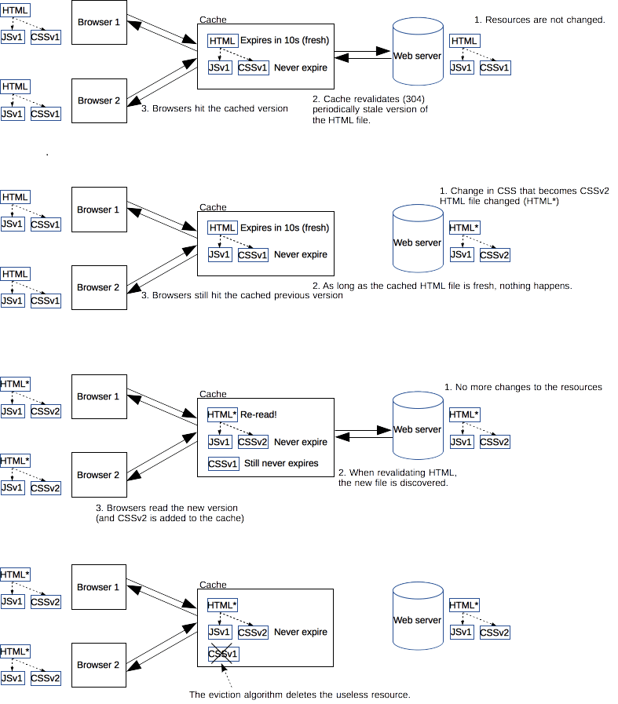
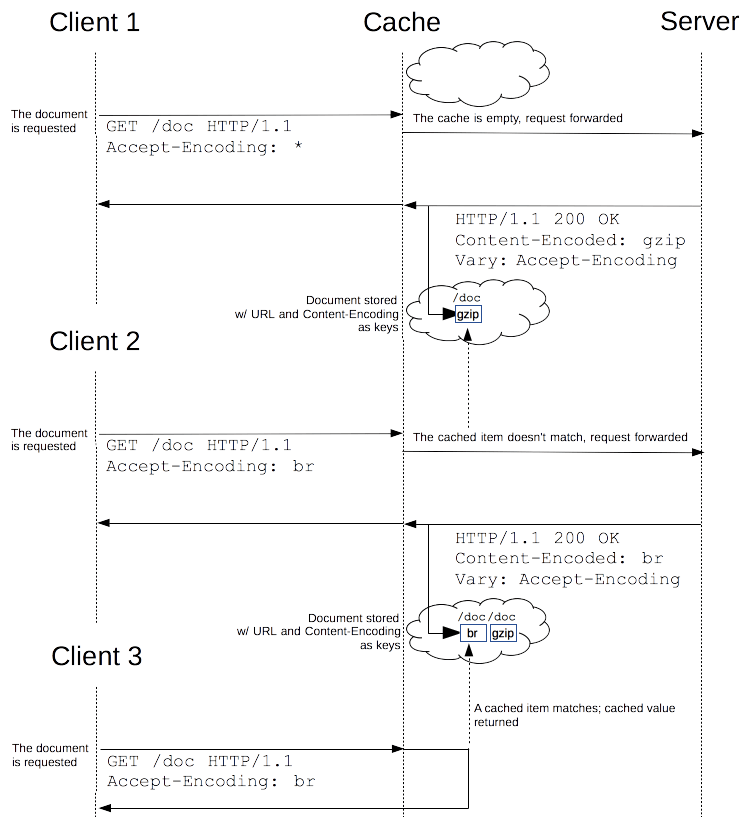

The performance of web sites and applications can be significantly improved by reusing previously fetched resources. Web caches reduce latency and network traffic and thus lessen the time needed to display a representation of a resource. By making use of HTTP caching, Web sites become more responsive.
Caching is a technique that stores a copy of a given resource and serves it back when requested. When a web cache has a requested resource in its store, it intercepts the request and returns its copy instead of re-downloading from the originating server. This achieves several goals: it eases the load of the server that doesn’t need to serve all clients itself, and it improves performance by being closer to the client, i.e., it takes less time to transmit the resource back. For a web site, it is a major component in achieving high performance. On the other side, it has to be configured properly as not all resources stay identical forever: it is important to cache a resource only until it changes, not longer.
There are several kinds of caches: these can be grouped into two main categories: private or shared caches. A shared cache is a cache that stores responses for reuse by more than one user. A private cache is dedicated to a single user. This page will mostly talk about browser and proxy caches, but there are also gateway caches, CDN, reverse proxy caches and load balancers that are deployed on web servers for better reliability, performance and scaling of web sites and web applications.

A private cache is dedicated to a single user. You might have seen "caching" in your browser's settings already. A browser cache holds all documents downloaded via HTTP by the user. This cache is used to make visited documents available for back/forward navigation, saving, viewing-as-source, etc. without requiring an additional trip to the server. It likewise improves offline browsing of cached content.
A shared cache is a cache that stores responses to be reused by more than one user. For example, an ISP or your company might have set up a web proxy as part of its local network infrastructure to serve many users so that popular resources are reused a number of times, reducing network traffic and latency.
HTTP caching is optional but usually desirable. HTTP caches are typically limited to caching responses to {{HTTPMethod("GET")}}; they may decline other methods. The primary cache key consists of the request method and target URI (often only the URI is used — this is because only GET requests are caching targets).
Common forms of caching entries are:
A cache entry might also consist of multiple stored responses differentiated by a secondary key, if the request is target of content negotiation. For more details see the information about the {{HTTPHeader("Vary")}} header below.
Cache-Control headerThe {{HTTPHeader("Cache-Control")}} HTTP/1.1 general-header field is used to specify directives for caching mechanisms in both requests and responses. Use this header to define your caching policies with the variety of directives it provides.
The cache should not store anything about the client request or server response. A request is sent to the server and a full response is downloaded each and every time.
Cache-Control: no-store
A cache will send the request to the origin server for validation before releasing a cached copy.
Cache-Control: no-cache
The "public" directive indicates that the response may be cached by any cache. This can be useful if pages with HTTP authentication, or response status codes that aren't normally cacheable, should now be cached.
On the other hand, "private" indicates that the response is intended for a single user only and must not be stored by a shared cache. A private browser cache may store the response in this case.
Cache-Control: private Cache-Control: public
The most important directive here is max-age=<seconds>, which is the maximum amount of time in which a resource will be considered fresh. This directive is relative to the time of the request, and overrides the {{HTTPHeader("Expires")}} header (if set). For the files in the application that will not change, you can normally use aggressive caching. This includes static files such as images, CSS files, and JavaScript files, for example.
For more details, see also the Freshness section below.
Cache-Control: max-age=31536000
When using the "must-revalidate" directive, the cache must verify the status of the stale resources before using it and expired ones should not be used. For more details, see the Validation section below.
Cache-Control: must-revalidate
Pragma header{{HTTPHeader("Pragma")}} is an HTTP/1.0 header. Pragma: no-cache is like Cache-Control: no-cache in that it forces caches to submit the request to the origin server for validation, before releasing a cached copy. However, Pragma is not specified for HTTP responses and is therefore not a reliable replacement for the general HTTP/1.1 Cache-Control header.
Pragma should only be used for backwards compatibility with HTTP/1.0 caches where the Cache-Control HTTP/1.1 header is not yet present.
Once a resource is stored in a cache, it could theoretically be served by the cache forever. Caches have finite storage so items are periodically removed from storage. This process is called cache eviction. On the other side, some resources may change on the server so the cache should be updated. As HTTP is a client-server protocol, servers can't contact caches and clients when a resource changes; they have to communicate an expiration time for the resource. Before this expiration time, the resource is fresh; after the expiration time, the resource is stale. Eviction algorithms often privilege fresh resources over stale resources. Note that a stale resource is not evicted or ignored; when the cache receives a request for a stale resource, it forwards this request with a {{HTTPHeader("If-None-Match")}} to check if it is in fact still fresh. If so, the server returns a {{HTTPStatus("304")}} (Not Modified) header without sending the body of the requested resource, saving some bandwidth.
Here is an example of this process with a shared cache proxy:

The freshness lifetime is calculated based on several headers. If a "Cache-Control: max-age=N" header is specified, then the freshness lifetime is equal to N. If this header is not present, which is very often the case, it is checked if an {{HTTPHeader("Expires")}} header is present. If an Expires header exists, then its value minus the value of the {{HTTPHeader("Date")}} header determines the freshness lifetime.
If an origin server does not explicitly specify freshness (e.g. using {{HTTPHeader("Cache-Control")}} or {{HTTPHeader("Expires")}} header) then a heuristic approach may be used.
In this case look for a {{HTTPHeader("Last-Modified")}} header. If this header is present, then the cache's freshness lifetime is equal to the value of the Date header minus the value of the Last-modified header divided by 10. The expiration time is computed as follows:
expirationTime = responseTime + freshnessLifetime - currentAge
where responseTime is the time at which the response was received according to the browser. For more information see RFC 7234: Hypertext Transfer Protocol (HTTP/1.1): 4.2.2. Calculating Heuristic Freshness.
The more we use cached resources, the better the responsiveness and the performance of a Web site will be. To optimize this, good practices recommend to set expiration times as far in the future as possible. This is possible on resources that are regularly updated, or often, but is problematic for resources that are rarely and infrequently updated. They are the resources that would benefit the most from caching resources, yet this makes them very difficult to update. This is typical of the technical resources included and linked from each Web pages: JavaScript and CSS files change infrequently, but when they change you want them to be updated quickly.
Web developers invented a technique that Steve Souders called revving. Infrequently updated files are named in a specific way: in their URL, usually in the filename, a revision (or version) number is added. That way each new revision of this resource is considered as a resource on its own that never changes and that can have an expiration time very far in the future, usually one year or even more. In order to have the new versions, all the links to them must be changed, that is the drawback of this method: additional complexity that is usually taken care of by the tool chain used by Web developers. When the infrequently variable resources change they induce an additional change to often variable resources. When these are read, the new versions of the others are also read.
This technique has an additional benefit: updating two cached resources at the same time will not lead to the situation where the out-dated version of one resource is used in combination with the new version of the other one. This is very important when web sites have CSS stylesheets or JS scripts that have mutual dependencies, i.e., they depend on each other because they refer to the same HTML elements.

The revision version added to revved resources doesn't need to be a classical revision string like 1.1.3, or even a monotonously growing suite of number. It can be anything that prevent collisions, like a hash or a date.
When a cached document's expiration time has been reached, it is either validated or fetched again. Validation can only occur if the server provided either a strong validator or a weak validator.
Revalidation is triggered when the user presses the reload button. It is also triggered under normal browsing if the cached response includes the "Cache-Control: must-revalidate" header. Another factor is the cache validation preferences in the Advanced->Cache preferences panel. There is an option to force a validation each time a document is loaded.
The {{HTTPHeader("ETag")}} response header is an opaque-to-the-useragent value that can be used as a strong validator. That means that a HTTP user-agent, such as the browser, does not know what this string represents and can't predict what its value would be. If the ETag header was part of the response for a resource, the client can issue an {{HTTPHeader("If-None-Match")}} in the header of future requests – in order to validate the cached resource.
The {{HTTPHeader("Last-Modified")}} response header can be used as a weak validator. It is considered weak because it only has 1-second resolution. If the Last-Modified header is present in a response, then the client can issue an {{HTTPHeader("If-Modified-Since")}} request header to validate the cached document.
When a validation request is made, the server can either ignore the validation request and respond with a normal {{HTTPStatus(200)}} OK, or it can return {{HTTPStatus(304)}} Not Modified (with an empty body) to instruct the browser to use its cached copy. The latter response can also include headers that update the expiration time of the cached document.
The {{HTTPHeader("Vary")}} HTTP response header determines how to match future request headers to decide whether a cached response can be used, or if a fresh one must be requested from the origin server.
When a cache receives a request that has a Vary header field, it must not use a cached response by default unless all header fields specified in the Vary header match in both the original (cached) request and the new request.
This feature is commonly used to allow a resource to be cached in uncompressed and (various) compressed forms, and served appropriately to user agents based on the encodings that they support. For example, a server can set Vary: Accept-Encoding to ensure that a separate version of a resource is cached for all requests that specify support for a particular set of encodings, e.g. Accept-Encoding: gzip,deflate,sdch.
Vary: Accept-Encoding
Use Vary with care—it can easily reduce the effectiveness of caching! A caching server should use normalization to reduce duplicated cache entries and unnecessary requests to the origin server. This is particularly true when using Vary with headers and header values that can have many values.
The Vary header can also be useful for serving different content to desktop and mobile users, or to allow search engines to discover the mobile version of a page (and perhaps also tell them that no Cloaking is intended). This is usually achieved with the Vary: User-Agent header, and works because the {{HTTPHeader("User-Agent")}} header value is different for mobile and desktop clients.
Vary: User-Agent
As discussed above, caching servers will by default match future requests only to requests with exactly the same headers and header values. That means a request will be made to the origin and a new cache will be created for every slight variant that might be specified by different user-agents.
For example, by default all of the following result in a separate request to the origin and a separate cache entry: Accept-Encoding: gzip,deflate,sdch, Accept-Encoding: gzip,deflate, Accept-Encoding: gzip. This is true even though the origin server will probably respond with — and store — the same resource for all requests (a gzip)!
To avoid unnecessary requests and duplicated cache entries, caching servers should use normalization to pre-process the request and cache only files that are needed. For example, in the case of Accept-Encoding you could check for gzip and other compression types in the header before doing further processing, and otherwise unset the header. In "pseudo code" this might look like:
// Normalize Accept-Encoding
if (req.http.Accept-Encoding) {
if (req.http.Accept-Encoding ~ "gzip") {
set req.http.Accept-Encoding = "gzip";
}
// elsif other encoding types to check
else {
unset req.http.Accept-Encoding;
}
}
User-Agent has even more variation than Accept-Encoding. So if using Vary: User-Agent for caching mobile/desktop variants of files you'd similarly check for the presence of "mobile" and "desktop" in the request User-Agent header, and then clear it.